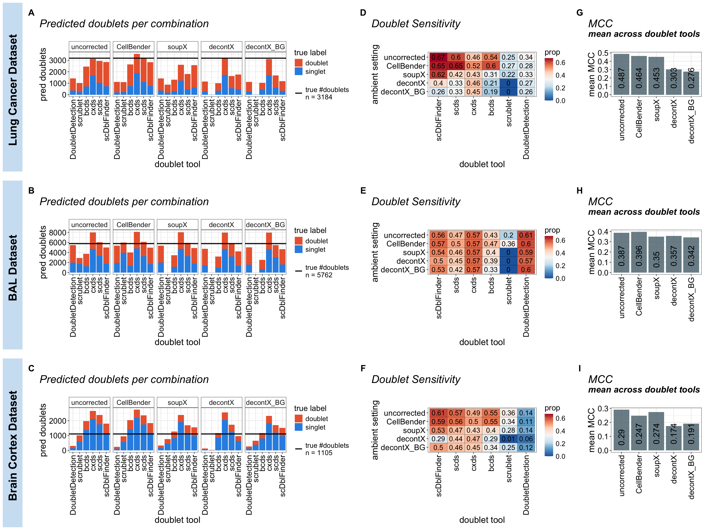

Last updated: 2026-10-10
Checks:
Knit directory:
ambient_doublet_singlecell/
This reproducible R Markdown
analysis was created with workflowr (version
1.7.1). The Checks tab describes the reproducibility checks
that were applied when the results were created. The Past
versions tab lists the development history.
Great! Since the R Markdown file has been committed to the Git
repository, you know the exact version of the code that produced these
results.
Great job! The global environment was empty. Objects defined in the
global environment can affect the analysis in your R Markdown file in
unknown ways. For reproduciblity it’s best to always run the code in an
empty environment.
The command set.seed(20260605) was run prior to running
the code in the R Markdown file. Setting a seed ensures that any results
that rely on randomness, e.g. subsampling or permutations, are
reproducible.
Nice! There were no cached chunks for this analysis, so you can be
confident that you successfully produced the results during this
run.
Great job! Using relative paths to the files within your workflowr
project makes it easier to run your code on other machines.
Great! You are using Git for version control. Tracking code development
and connecting the code version to the results is critical for
reproducibility.
The results in this page were generated with repository version
a897fc9 .
See the Past versions tab to see a history of the changes made
to the R Markdown and HTML files.
Note that you need to be careful to ensure that all relevant files for
the analysis have been committed to Git prior to generating the results
(you can use wflow_publish or
wflow_git_commit). workflowr only checks the R Markdown
file, but you know if there are other scripts or data files that it
depends on. Below is the status of the Git repository when the results
were generated:
Ignored files:
Ignored: .DS_Store
Ignored: .RData
Ignored: .Renviron
Ignored: .Rhistory
Ignored: .Rproj.user/
Ignored: CLAUDE.md
Ignored: analysis/figures_v1/
Ignored: analysis/figures_v2/
Ignored: analysis/figures_v3/
Ignored: analysis/obsolete/
Ignored: analysis/qc_filtered_ambient/
Ignored: analysis/untracked_BAL_inflammation_10x_HTO_clean_decontX_different_doublet_settings.Rmd
Ignored: analysis/untracked_BAL_inflammation_10x_HTO_clean_soupX_different_doublet_settings.Rmd
Ignored: analysis/untracked_BrainCortex_nuclei_10x_QC_filtering_deMULTIplex2.Rmd
Ignored: analysis/untracked_BrainCortex_nuclei_10x__LungCancer_10x_CMO_check_CMO_ADT_distribution.Rmd
Ignored: analysis/untracked_BrainCortex_nuclei_10x_clean_decontX_different_doublet_settings.Rmd
Ignored: analysis/untracked_BrainCortex_nuclei_10x_clean_soupX_different_doublet_settings.Rmd
Ignored: analysis/untracked_BrainCortex_nuclei_10x_evaluate_doublet_calling_deMULTIplex2.Rmd
Ignored: analysis/untracked_BrainCortex_nuclei_10x_inspect_SampleOfOrigin_false_singlets.Rmd
Ignored: analysis/untracked_BrainCortex_nuclei_10x_run_deMULTIplex2.Rmd
Ignored: analysis/untracked_LungCancer_10x_CMO_clean_decontX_different_doublet_settings.Rmd
Ignored: analysis/untracked_LungCancer_10x_CMO_clean_soupX_different_doublet_settings.Rmd
Ignored: analysis/untracked_figure_05.Rmd
Ignored: claude_logs/
Ignored: code/TMP_notes.R
Ignored: code/ambient_tools/
Ignored: code/make_figures.R
Ignored: code/useful_scripts/zenodo_export.R
Ignored: output/.DS_Store
Ignored: output/data/
Ignored: output/data_zenodo/
Ignored: output/figures/
Ignored: output/package_refs/
Ignored: output/results/.DS_Store
Ignored: output/results/BAL_inflammation_10x/.DS_Store
Ignored: output/results/BrainCortex_nuclei_10x/.DS_Store
Ignored: output/results/BrainCortex_nuclei_10x/DoubletCallingPerformance/.DS_Store
Ignored: output/results/LungCancer_10x/.DS_Store
Ignored: output/results/LungCancer_10x/DoubletCallingPerformance/.DS_Store
Ignored: output/results/Tonsils_10xFlex/.DS_Store
Ignored: output/results/Tonsils_10xFlex/Engineered/.DS_Store
Ignored: renv/
Ignored: scp_file.txt
Untracked files:
Untracked: output/results/BrainCortex_nuclei_10x/DoubletCallingPerformance/BrainCortex_nuclei_10x_TESTING_deMULTIplex2_correctAssignments_MCC.csv
Untracked: output/results/BrainCortex_nuclei_10x/DoubletCallingPerformance/BrainCortex_nuclei_10x_correctAssignments_MCC_qc_filtered_ambient.csv
Untracked: output/results/LungCancer_10x/DoubletCallingPerformance/LungCancer_10x_correctAssignments_MCC_qc_filtered_ambient.csv
Unstaged changes:
Modified: .gitignore
Note that any generated files, e.g. HTML, png, CSS, etc., are not
included in this status report because it is ok for generated content to
have uncommitted changes.
These are the previous versions of the repository in which changes were
made to the R Markdown (analysis/figure_05.Rmd) and HTML
(docs/figure_05.html) files. If you’ve configured a remote
Git repository (see ?wflow_git_remote), click on the
hyperlinks in the table below to view the files as they were in that
past version.
File
Version
Author
Date
Message
html
4cfa89e
Michelle Meier
2026-10-06
Build site.
Rmd
4683be9
Michelle Meier
2026-10-06
wflow_publish(c("analysis/figure_01.Rmd", "analysis/figure_03.Rmd",
html
7e87b35
Michelle Meier
2026-08-20
Build site.
Rmd
d1afc6a
Michelle Meier
2026-08-20
wflow_publish(c("analysis/figure_01.Rmd", "analysis/figure_03.Rmd",
html
27d9be4
Michelle Meier
2026-08-20
Build site.
Rmd
fe9ea5c
Michelle Meier
2026-08-20
wflow_publish("analysis/figure_05.Rmd")
html
2a8dfa5
Michelle Meier
2026-08-19
Build site.
Rmd
0415da4
Michelle Meier
2026-08-19
wflow_publish(c("analysis/figure_02.Rmd", "analysis/figure_04.Rmd",
html
0e95173
Michelle Meier
2026-08-06
Build site.
Rmd
e735eb7
Michelle Meier
2026-08-06
wflow_publish("analysis/figure_05.Rmd")
html
93d8b3d
Michelle Meier
2026-08-04
Build site.
Rmd
9a5911d
Michelle Meier
2026-08-04
wflow_publish("analysis/figure_05.Rmd")
html
183dfb4
Michelle Meier
2026-08-04
Build site.
Rmd
0ed360d
Michelle Meier
2026-08-04
wflow_publish("analysis/figure_05.Rmd")
html
2eb9078
Michelle Meier
2026-08-04
Build site.
html
d47ddde
Michelle Meier
2026-07-23
Build site.
Rmd
70c6675
Michelle Meier
2026-07-23
wflow_publish("analysis/figure_05.Rmd")
html
c020580
Michelle Meier
2026-07-17
Build site.
Rmd
4195d9b
Michelle Meier
2026-07-17
wflow_publish("analysis/figure_05.Rmd")
html
e674793
Michelle Meier
2026-07-16
Build site.
Rmd
499f076
Michelle Meier
2026-07-16
wflow_publish("analysis/figure_05.Rmd")
html
8f51299
Michelle Meier
2026-07-16
Build site.
Rmd
ddde4e5
Michelle Meier
2026-07-16
wflow_publish("analysis/figure_05.Rmd")
html
c5f923c
Michelle Meier
2026-07-16
Build site.
Rmd
777b277
Michelle Meier
2026-07-16
wflow_publish("analysis/figure_05.Rmd")
html
5b60959
Michelle Meier
2026-07-14
Build site.
Rmd
330d575
Michelle Meier
2026-07-14
wflow_publish("analysis/figure_05.Rmd")
html
a55c52b
Michelle Meier
2026-07-07
Build site.
Rmd
ee594da
Michelle Meier
2026-07-07
wflow_publish(c("analysis/figure_03.Rmd", "analysis/figure_05.Rmd"))
Introduction
This markdown makes the plots for Figure 5: Doublet detection
performs best on uncorrected or CellBender corrected data. This will
contain results from the following three dataset: The lung cancer
dataset, the BAL dataset and the brain cortex dataset.
Set-up
Load libraries
suppressPackageStartupMessages({
library(SingleCellExperiment)
library(tidyverse)
library(readr)
library(here)
library(Seurat)
library(scater)
library(qs2)
library(DropletUtils)
library(patchwork)
})Warning: package 'ggplot2' was built under R version 4.5.2
Dataset configuration
This function helps collect all information needed for each dataset
to load + plot later on.
dataset_config <- function(data_dir,
uncorrected_dir,
sample_grep = uncorrected_dir,
performance_file,
dataset_label = data_dir,
filter_remove = FALSE) {
list(data_dir = data_dir, # subfolder under output/data/
uncorrected_dir = uncorrected_dir, # basename of the folder holding the uncorrected/ground-truth data
sample_grep = sample_grep, # regex used to find this dataset's ambient-tool subfolders
performance_file = performance_file,# path (relative to output/results/) to the *_correctAssignments_MCC.csv
dataset_label = dataset_label # human-readable label used in headings/plot subtitles)
)
}dataset_registry <- list(
dataset_config(
data_dir = "LungCancer_10x",
uncorrected_dir = "LungCancer_10x_cellranger_allmultiplets",
performance_file = "LungCancer_10x/DoubletCallingPerformance/LungCancer_10x_correctAssignments_MCC.csv",
dataset_label = "Lung Cancer Dataset"
),
dataset_config(
data_dir = "BAL_inflammation_10x",
uncorrected_dir = "BAL_inflammation_10x_cellranger",
performance_file = "BAL_inflammation_10x/DoubletCallingPerformance/BAL_inflammation_10x_correctAssignments_MCC.csv",
dataset_label = "BAL Dataset"
),
dataset_config(
data_dir = "BrainCortex_nuclei_10x",
uncorrected_dir = "BrainCortex_nuclei_10x_cellranger",
performance_file = "BrainCortex_nuclei_10x/DoubletCallingPerformance/BrainCortex_nuclei_10x_correctAssignments_MCC.csv",
dataset_label = "Brain Cortex Dataset"
)
)
names(dataset_registry) <- vapply(dataset_registry, function(x) x$dataset_label, character(1))
Data loading functions
# Read+combine one ambient-tool subfolder's doublet calls with the dataset's ground-truth metadata.
load_ambient_results <- function(path, uncorrected_dir, filter_remove = FALSE) {
# ground-truth metadata always comes from the uncorrected/base folder for this dataset,
# regardless of which ambient-tool subfolder is currently being processed
meta <- read_tsv(file.path(dirname(path), uncorrected_dir, "metadata.tsv"), show_col_types = FALSE)
meta$doublet_class[meta$doublet_class == "multiplet"] <- "doublet"
#filter metadata based on uncorrected qc filtered barcodes - these are droplets that pass QC (based on RNA reads) AND have a doublet/singlet assignment based on demultiplexing
barcodes_to_keep <- read_tsv(file.path(dirname(path), uncorrected_dir, "filtered_qc_barcodes.tsv"), show_col_types = F) %>% pull(.)
meta <- meta %>%
filter(., Barcode %in% barcodes_to_keep)
# doublet calling results for this ambient-tool setting
doublet_file <- list.files(path = file.path(path, "doublet_calls"),
pattern = "consensus", full.names = TRUE)
dbl_res <- read_csv(doublet_file, show_col_types = FALSE)
combined_res <- right_join(dbl_res, meta)
#replace missing doublet (NAs) labels with "removed_cell"- using scDblFinder to guide but will be the same with all tools
combined_res$cells_kept <- ifelse(is.na(combined_res$scDblFinder_DropletType), "removed_cell", "kept_cell")
#if this setting is ambient-corrected, bring in its ncount/nfeature "removed" columns too,
# prefixed with the tool name so they sit side by side once every setting is combined
meta_current <- read_tsv(file.path(path, "metadata.tsv"), show_col_types = FALSE)
if ("ncount_frac_removed" %in% colnames(meta_current)) {
ambient_tool_name <- gsub(paste0(uncorrected_dir, "_"), "", basename(path), fixed = TRUE)
meta_current <- meta_current %>%
select(Barcode, ncount, nfeatures_rounded, nfeature_frac_removed, ncount_frac_removed)
colnames(meta_current)[2:5] <- paste0(ambient_tool_name, "_", colnames(meta_current)[2:5])
combined_res <- left_join(combined_res, meta_current)
}
combined_res$ambient_tool <- if (basename(path) == uncorrected_dir) {
"uncorrected"
} else {
gsub(paste0(uncorrected_dir, "_"), "", basename(path), fixed = TRUE)
}
return(combined_res)
}
# Load and combine every ambient-tool setting for one dataset (as described by its dataset_config()).
load_dataset_results <- function(cfg) {
files <- list.dirs(path = here("output/data", cfg$data_dir), full.names = TRUE, recursive = FALSE)
files <- files[grepl(cfg$sample_grep, files)]
list_results <- lapply(files, load_ambient_results,
uncorrected_dir = cfg$uncorrected_dir)
names(list_results) <- basename(files)
df <- bind_rows(list_results)
df$dataset <- cfg$dataset_label
return(df)
}
# Load a dataset's precomputed doublet-calling performance metrics (see *_evaluate_doublet_calling.Rmd).
load_performance_results <- function(cfg) {
perf <- read_csv(here("output/results", cfg$performance_file),
show_col_types = FALSE, col_types = c("ccnnnnnnnnnnnn"))
perf[is.na(perf)] <- 0
perf <- perf %>%
mutate(doublet_tool = factor(doublet_tool,
levels = c("scDblFinder", "scds", "cxds", "bcds", "scrublet", "DoubletDetection")),
ambient_tool = factor(ambient_tool,
levels = rev(c("uncorrected", "CellBender", "soupX", "decontX", "decontX_BG"))))
perf$dataset <- cfg$dataset_label
return(perf)
}
plotting shortcuts
plot_sizing <- theme_bw() +theme(axis.title = element_text(size = 18),
axis.text = element_text(size = 16, colour = "black"),
plot.title = element_text(size = 22),
plot.subtitle= element_text(size = 18),
legend.text = element_text(size = 14),
legend.title = element_blank())
plot_sizing_keep_legend <- theme_bw() +theme(axis.title = element_text(size = 18),
axis.text = element_text(size = 16, colour = "black"),
plot.title = element_text(size = 22),
legend.text = element_text(size = 14),
legend.title = element_text(size=16))
rotate_x <- theme(axis.text.x = element_text(angle = 90, vjust = 0.5, hjust=1))
strip_fix <- theme(strip.background = element_rect(fill = "white"),
strip.text = element_text(size = 14))
title_size <- theme(plot.title = element_text(size = 22, face = "italic"),
plot.subtitle = element_text(size=18, face="bold.italic"))
Colours
# method colours
ambient_tools_colours <- c( "#67BF5C", "#AD8BC9",
"#A8786E", "#CDCC5D", "#6DCCDA", "#EB663B", "grey80" )
names(ambient_tools_colours) <- c("uncorrected", "decontX", "decontX_BG",
"soupX", "CellBender", "consensus doublet", "missed all")
# doublet/singlet colours
doublet_colours <- c("#2E91E5", "#EB663B"); names(doublet_colours) <- c("singlet", "doublet")
Directory names
save_dir <- here("output/figures/v4")
Make all plots
Make plotting function
There are many plots to plot, so we’ve written a function.
# doublet proportion predicted - stacked barplots with true labels
plot_predicted_proportions <- function(df_plot,
dataset_label){
#get true doublet proportion
doublet_count_true <- df_plot %>%
filter(., ambient_tool == "uncorrected" & doublet_class == "doublet") %>% #could be any setting, but need to filter down
nrow()
df_plot %>%
pivot_longer(., cols = ends_with("_DropletType"), names_to = "doublet_tool", values_to = "call") %>%
mutate(., doublet_tool = gsub("_DropletType", "", doublet_tool)) %>%
filter(., call == "doublet") %>%
group_by(., doublet_tool, call, doublet_class, ambient_tool) %>%
summarise(., counts = n()) %>%
mutate(doublet_tool = factor(doublet_tool,
levels = rev(c("scDblFinder", "scds", "cxds", "bcds", "scrublet", "DoubletDetection"))),
ambient_tool = factor(ambient_tool,
levels = c("uncorrected", "CellBender", "soupX", "decontX", "decontX_BG"))) %>%
dplyr::rename(`true label`=doublet_class) %>%
ggplot(., aes(x=doublet_tool, y = counts, fill=`true label`)) +
geom_bar(stat="identity", position = "stack") +
facet_wrap(~ambient_tool, nrow=1) +
plot_sizing_keep_legend + strip_fix + rotate_x +
scale_fill_manual(values = doublet_colours) +
geom_hline(aes(yintercept = doublet_count_true, colour = "true #doublets"), linewidth=1) +
scale_colour_manual(values = c("true #doublets" = "black"),
labels = paste0("true #doublets\nn = ", doublet_count_true),
name = NULL) +
ggtitle(dataset_label, subtitle = "Predicted doublets per combination") + xlab("doublet tool") + ylab("pred doublets") + title_size
}
# heatmap, mean-across-tools barplot, and per-doublet-tool "winner" barplot for one performance metric.
run_assignment_evaluation_heatmap <- function(results_df,
plotting_metric,
name_metric,
name_scale,
dataset_label,
limits = NULL) {
results_df <- results_df %>%
dplyr::rename(plotting_metric = plotting_metric)
heatmap <- results_df %>%
ggplot() +
geom_tile(aes(x = doublet_tool, y = ambient_tool, fill = plotting_metric), color = "black", size = 0.1) +
geom_text(aes(x = doublet_tool, y = ambient_tool, label = round(plotting_metric, 2)), size = 5) +
theme_bw() + plot_sizing_keep_legend + rotate_x + title_size +
ylab("ambient setting") + xlab("doublet tool") +
scale_fill_distiller(palette = "RdBu", direction = -1, name = name_scale, limits = limits) +
ggtitle(dataset_label, subtitle = name_metric) + title_size
return(heatmap)
}
run_assignment_means <- function(results_df,
plotting_metric,
y_axis_label,
dataset_label,
name_metric) {
results_df <- results_df %>%
dplyr::rename(plotting_metric = plotting_metric)
barplot <- results_df %>%
mutate(., ambient_tool = factor(ambient_tool, levels = rev(levels(results_df$ambient_tool)))) %>%
group_by(ambient_tool) %>%
summarise(mean_plotting_metric = mean(plotting_metric)) %>%
ggplot(aes(x = ambient_tool, y = mean_plotting_metric)) +
geom_bar(stat = "identity", fill = "#546E7A", alpha = 0.8) +
geom_text(aes(label = round(mean_plotting_metric, 3), y = 0), size = 6, angle = 90, hjust = -0.3) +
plot_sizing + rotate_x +
ylab(y_axis_label) +
xlab("") +
ggtitle(dataset_label, subtitle = paste0(name_metric, " (mean)")) +
title_size
return(barplot)
}
Generate panels for figure
generate_dataset_figures <- function(cfg) {
df_plot <- load_dataset_results(cfg)
performance_results <- load_performance_results(cfg)
list(
dataset_label = cfg$dataset_label,
df_plot = df_plot,
performance_results = performance_results,
pred_prop = plot_predicted_proportions(df_plot, cfg$dataset_label),
performance_plot_true_doublet = run_assignment_evaluation_heatmap(results_df = performance_results,
plotting_metric = "Sensitivity",
name_metric = "Doublet Sensitivity",
dataset_label = cfg$dataset_label,
name_scale = "prop"),
means_mcc = run_assignment_means(results_df = performance_results,
dataset_label = cfg$dataset_label,
plotting_metric = "mcc",
y_axis_label = "mean MCC",
name_metric = "MCC")
)
}results_by_dataset <- lapply(dataset_registry, generate_dataset_figures)Warning: Using an external vector in selections was deprecated in tidyselect 1.1.0.
ℹ Please use `all_of()` or `any_of()` instead.
# Was:
data %>% select(plotting_metric)
# Now:
data %>% select(all_of(plotting_metric))
See <https://tidyselect.r-lib.org/reference/faq-external-vector.html>.
This warning is displayed once per session.
Call `lifecycle::last_lifecycle_warnings()` to see where this warning was
generated.Warning: Using `size` aesthetic for lines was deprecated in ggplot2 3.4.0.
ℹ Please use `linewidth` instead.
This warning is displayed once per session.
Call `lifecycle::last_lifecycle_warnings()` to see where this warning was
generated.# Shared colour scale for sensitivity heatmaps
all_perf <- lapply(results_by_dataset, `[[`, "performance_results") %>% bind_rows()
limits_sensitivity <- range(all_perf$Sensitivity, na.rm = TRUE)
results_by_dataset <- lapply(results_by_dataset, function(res) {
res$performance_plot_true_doublet <- run_assignment_evaluation_heatmap(
results_df = res$performance_results, plotting_metric = "Sensitivity",
name_metric = "Doublet Sensitivity", name_scale = "prop",
dataset_label = res$dataset_label, limits = limits_sensitivity)
res
})
Main Figure
make_row_label <- function(label, fill = "#CFE2F3") {
ggplot() +
annotate("text", x = 0.5, y = 0.15, label = label,
size = 8, fontface = "bold", hjust = 0.5, vjust = 0.5, angle = 90) +
scale_x_continuous(limits = c(0, 1), expand = c(0, 0)) +
scale_y_continuous(limits = c(0, 1), expand = c(0, 0)) +
theme_void() +
theme(plot.background = element_rect(fill = fill, color = NA),
plot.margin = margin(0, 0, 0, 0)) +
coord_cartesian(clip = "off")
}
close_title <- theme(
plot.title.position = "plot",
plot.title = element_text(margin = margin(b = 2))
)
# column-major tags via labs(tag=): A-C = col1, D-F = col2, G-I = col3
n <- length(results_by_dataset)
dataset_rows <- lapply(seq_along(results_by_dataset), function(idx) {
res <- results_by_dataset[[idx]]
list(
make_row_label(res$dataset_label),
res$pred_prop + labs(title = "Predicted doublets per combination", subtitle = NULL, tag = LETTERS[idx]) + close_title,
res$performance_plot_true_doublet + labs(title = "Doublet Sensitivity", subtitle = NULL, tag = LETTERS[n + idx]) + close_title,
res$means_mcc + labs(title = "MCC", subtitle = "mean across doublet tools", tag = LETTERS[2*n + idx]) + close_title
)
})
# interleave spacer rows between datasets so coloured labels are separate entries
spacer_row <- replicate(4, plot_spacer(), simplify = FALSE)
all_plots <- unlist(
lapply(seq_len(n), function(i) {
if (i < n) c(dataset_rows[[i]], spacer_row) else dataset_rows[[i]]
}),
recursive = FALSE
)
row_heights <- rep(c(1, 0.08), n)
row_heights <- row_heights[seq_len(2 * n - 1)]
main_figure <- wrap_plots(all_plots, ncol = 4, byrow = TRUE) +
plot_layout(widths = c(0.2, 3, 1.5, 1.25), heights = row_heights) &
theme(plot.tag = element_text(size = 18, face = "bold", margin = margin(t = 6, r = 10, b = 6, l = 6)))
ggsave(plot = main_figure,
filename = "Figure_05_EvaluationComplexDatasets.png",
path = save_dir,
device = "png",
width = 20,
height =15,
dpi = 1200,
bg = "transparent")
main_figure

Past versions of unnamed-chunk-11-1.png
Version
Author
Date
4cfa89e
Michelle Meier
2026-10-06
27d9be4
Michelle Meier
2026-08-20
2a8dfa5
Michelle Meier
2026-08-19
0e95173
Michelle Meier
2026-08-06
d47ddde
Michelle Meier
2026-07-23
c5f923c
Michelle Meier
2026-07-16
5b60959
Michelle Meier
2026-07-14
a55c52b
Michelle Meier
2026-07-07
sessionInfo()R version 4.5.0 (2025-04-11)
Platform: aarch64-apple-darwin20
Running under: macOS Sequoia 15.7.9
Matrix products: default
BLAS: /Library/Frameworks/R.framework/Versions/4.5-arm64/Resources/lib/libRblas.0.dylib
LAPACK: /Library/Frameworks/R.framework/Versions/4.5-arm64/Resources/lib/libRlapack.dylib; LAPACK version 3.12.1
locale:
[1] en_US.UTF-8/en_US.UTF-8/en_US.UTF-8/C/en_US.UTF-8/en_US.UTF-8
time zone: Australia/Melbourne
tzcode source: internal
attached base packages:
[1] stats4 stats graphics grDevices datasets utils methods
[8] base
other attached packages:
[1] patchwork_1.3.2 DropletUtils_1.28.0
[3] qs2_0.1.5 scater_1.36.0
[5] scuttle_1.18.0 Seurat_5.3.1.0000
[7] SeuratObject_5.1.0 sp_2.2-0
[9] here_1.0.1 lubridate_1.9.4
[11] forcats_1.0.0 stringr_1.5.1
[13] dplyr_1.1.4 purrr_1.2.0
[15] readr_2.1.5 tidyr_1.3.1
[17] tibble_3.3.0 ggplot2_4.0.3
[19] tidyverse_2.0.0 SingleCellExperiment_1.30.1
[21] SummarizedExperiment_1.38.1 Biobase_2.68.0
[23] GenomicRanges_1.60.0 GenomeInfoDb_1.44.0
[25] IRanges_2.42.0 S4Vectors_0.46.0
[27] BiocGenerics_0.54.0 generics_0.1.4
[29] MatrixGenerics_1.20.0 matrixStats_1.5.0
[31] workflowr_1.7.1
loaded via a namespace (and not attached):
[1] RcppAnnoy_0.0.22 splines_4.5.0
[3] later_1.4.2 R.oo_1.27.1
[5] polyclip_1.10-7 fastDummies_1.7.5
[7] lifecycle_1.0.5 edgeR_4.6.2
[9] rprojroot_2.1.1 vroom_1.6.5
[11] globals_0.18.0 processx_3.8.6
[13] lattice_0.22-6 MASS_7.3-65
[15] magrittr_2.0.4 limma_3.64.1
[17] plotly_4.10.4 sass_0.4.10
[19] rmarkdown_2.29 jquerylib_0.1.4
[21] yaml_2.3.10 httpuv_1.6.16
[23] sctransform_0.4.2 spam_2.11-1
[25] spatstat.sparse_3.1-0 reticulate_1.42.0
[27] cowplot_1.1.3 pbapply_1.7-2
[29] RColorBrewer_1.1-3 abind_1.4-8
[31] Rtsne_0.17 R.utils_2.13.0
[33] git2r_0.36.2 GenomeInfoDbData_1.2.14
[35] ggrepel_0.9.6 irlba_2.3.5.1
[37] listenv_0.9.1 spatstat.utils_3.1-4
[39] goftest_1.2-3 RSpectra_0.16-2
[41] dqrng_0.4.1 spatstat.random_3.4-1
[43] fitdistrplus_1.2-2 parallelly_1.45.0
[45] DelayedMatrixStats_1.30.0 codetools_0.2-20
[47] DelayedArray_0.34.1 tidyselect_1.2.1
[49] UCSC.utils_1.4.0 farver_2.1.2
[51] viridis_0.6.5 ScaledMatrix_1.16.0
[53] spatstat.explore_3.4-3 jsonlite_2.0.0
[55] BiocNeighbors_2.2.0 progressr_0.15.1
[57] ggridges_0.5.6 survival_3.8-3
[59] systemfonts_1.2.3 tools_4.5.0
[61] ragg_1.4.0 ica_1.0-3
[63] Rcpp_1.1.2 glue_1.8.0
[65] gridExtra_2.3 SparseArray_1.8.0
[67] xfun_0.52 HDF5Array_1.36.0
[69] withr_3.0.2 BiocManager_1.30.26
[71] fastmap_1.2.0 rhdf5filters_1.20.0
[73] callr_3.7.6 digest_0.6.37
[75] rsvd_1.0.5 timechange_0.3.0
[77] R6_2.6.1 mime_0.13
[79] textshaping_1.0.1 scattermore_1.2
[81] tensor_1.5 spatstat.data_3.1-6
[83] R.methodsS3_1.8.2 h5mread_1.0.1
[85] renv_1.1.4 data.table_1.17.4
[87] httr_1.4.7 htmlwidgets_1.6.4
[89] S4Arrays_1.8.1 whisker_0.4.1
[91] uwot_0.2.3 pkgconfig_2.0.3
[93] gtable_0.3.6 lmtest_0.9-40
[95] S7_0.2.1 XVector_0.48.0
[97] htmltools_0.5.8.1 dotCall64_1.2
[99] scales_1.4.0 png_0.1-8
[101] spatstat.univar_3.1-3 knitr_1.50
[103] rstudioapi_0.17.1 tzdb_0.5.0
[105] reshape2_1.4.4 nlme_3.1-168
[107] rhdf5_2.52.1 cachem_1.1.0
[109] zoo_1.8-14 KernSmooth_2.23-26
[111] vipor_0.4.7 parallel_4.5.0
[113] miniUI_0.1.2 pillar_1.10.2
[115] grid_4.5.0 vctrs_0.6.5
[117] RANN_2.6.2 promises_1.3.3
[119] stringfish_0.17.0 BiocSingular_1.24.0
[121] beachmat_2.24.0 xtable_1.8-4
[123] cluster_2.1.8.1 beeswarm_0.4.0
[125] evaluate_1.0.5 locfit_1.5-9.12
[127] cli_3.6.6 compiler_4.5.0
[129] rlang_1.3.0 crayon_1.5.3
[131] future.apply_1.20.0 labeling_0.4.3
[133] ps_1.9.1 getPass_0.2-4
[135] plyr_1.8.9 fs_2.1.0
[137] ggbeeswarm_0.7.2 stringi_1.8.7
[139] viridisLite_0.4.2 deldir_2.0-4
[141] BiocParallel_1.42.1 lazyeval_0.2.2
[143] spatstat.geom_3.4-1 Matrix_1.7-3
[145] RcppHNSW_0.6.0 hms_1.1.3
[147] bit64_4.6.0-1 sparseMatrixStats_1.20.0
[149] future_1.58.0 Rhdf5lib_1.30.0
[151] statmod_1.5.0 shiny_1.10.0
[153] ROCR_1.0-11 igraph_2.1.4
[155] RcppParallel_5.1.10 bslib_0.9.0
[157] bit_4.6.0